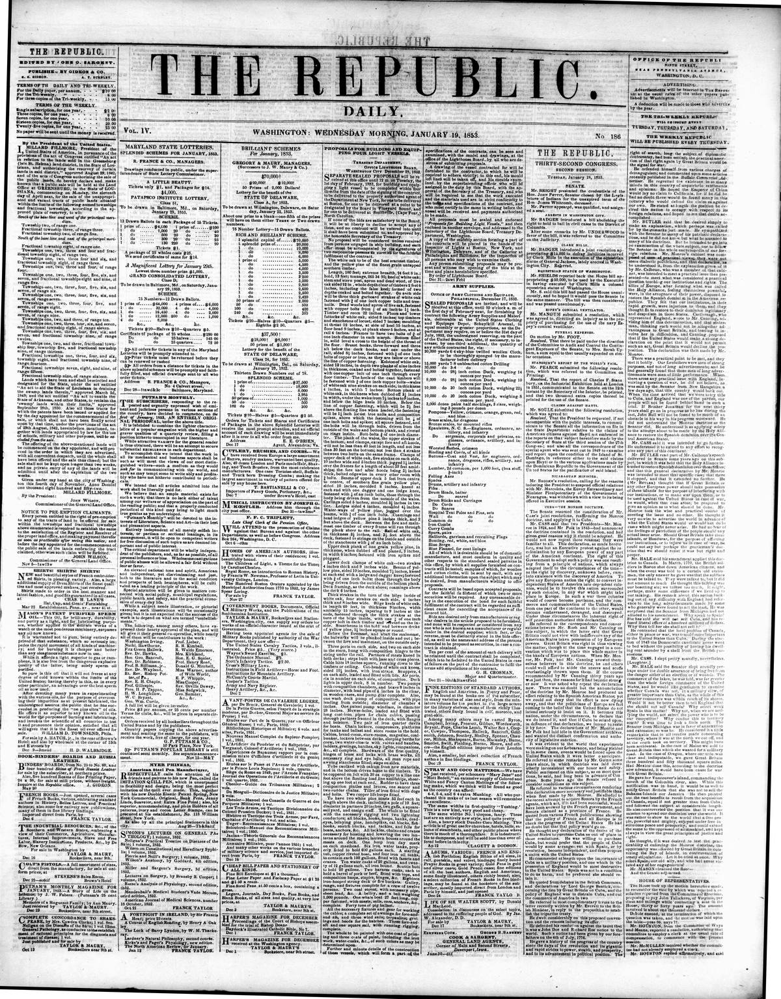

SOULE submitted the following resolution, which was agreed to: Resolved, That
https://www.loc.gov/resource/sn82014434/1853-01-19/ed-1/?sp=1

See the original pageVer la página original
Mr. SOULE submitted the following resolution, which was agreed to:
Resolved, That the President be requested, if not incompatible with the public interests, to communicate to the Senate all the information on file in the State Department relative to the claims of American citizens against Hayti not embraced in the reports on that subject heretofore made by the Secretary of State at the third session of the 27th Congress; and also all the correspondence with the agent who was sent out in 1849 to examine and report upon the condition of the island of St. Domingo, in reference either to the said claims upon Hayti or to the various applications made by the Dominican Republic to the Government of the United States for the pacification of said island.
How to cite this articleCómo citar este artículo
The Republic. (1853). Washington [D.C.], January 19, 185319 de enero de 1853. DR in the American PressRD en la Prensa Norteamericana. Library of Congress, Chronicling America: https://www.loc.gov/resource/sn82014434/1853-01-19/ed-1/?sp=1
ReferencesReferencias
Library of Congress, Chronicling America: The Republic, January 19, 185319 de enero de 1853.
Send an observationEnviar una observación
Does this article connect with your family, your town, or something you know? Did we get something wrong? Write to us. Observations go to the editor's inbox and are read by a person.¿Este artículo conecta con su familia, su pueblo o algo que usted conoce? ¿Nos equivocamos en algo? Escríbanos. Las observaciones llegan al buzón del editor y las lee una persona.
Send observationEnviar observación